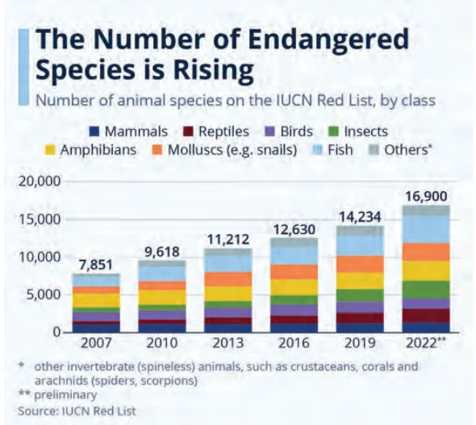
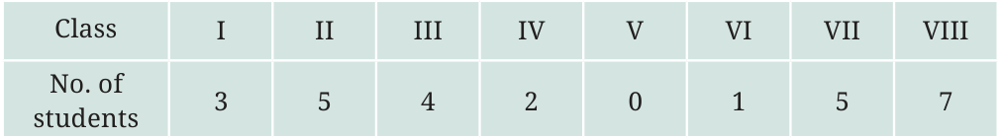
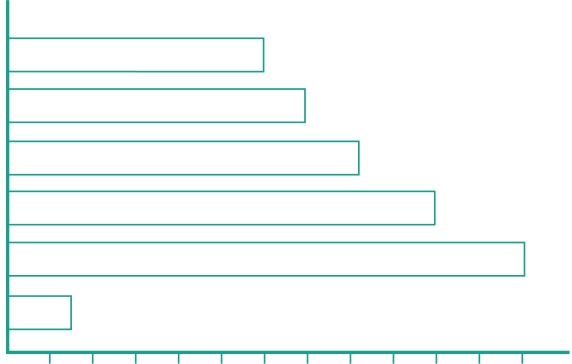

Have you seen graphs like this on TV or in a newspaper? Like pictographs, such bar graphs can help us to quickly understand and interpret information, such as the highest value, the comparison of values of different categories, etc. However, when the amount of data is large, presenting it by a pictograph is not only time consuming but

number-of-threatened-species-red-list/
at times difficult too. Let us see how data can be presented instead using a bar graph. Let’s take the data collected by Lakhanpal earlier, regarding the number of students absent on one day in each class:

He presented the same data using a bar graph:
1 unit length \(= 1\) student
No. of students absent in each class 8
Teacher’s Note
If the students have not noticed, please point out the equally spaced horizontal lines. Explain that this means that each pair of consecutive numbers on the left has the same gap.
Answer the following questions using the bar graph:
- In Class 2, ___________ students were absent that day.
- In which class were the maximum number of students absent? ___________
- Which class had full attendance that day? ___________ When making bar graphs, bars of uniform width can be drawn horizontally or vertically with equal spacing between them; then the length or height of each bar represents the given number. As we saw in pictographs, we can use a scale or key when the frequencies are larger. Let us look at an example of vehicular traffic at a busy road crossing in Delhi, which was studied by the traffic police on a particular day. The number of vehicles passing through the crossing each hour from 6 a.m. to 12:00 noon is shown in the bar graph. One unit of length stands for 100 vehicles.

\(11 - 12 10 - 11 9 - 10 8 - 9\)
\(7 - 8\)
\(6 - 7\)
Number of vehicles
We can see that the maximum traffic at the crossing is shown by the longest bar, i.e., for the time interval \(7 - 8\) a.m. The bar graph shows that 1200 vehicles passed through the crossing at that time. The second longest bar is for \(8 - 9\) a.m. During that time, 1000 vehicles passed through the crossing. Similarly, the minimum traffic is shown by the smallest bar, i.e., the bar for the time interval \(6 - 7\) a.m. During that time, only about 150 vehicles passed through the crossing. The second smallest bar is that for the time interval 11 a.m. \(- 12\) noon, when about 600 vehicles passed through the crossing. The total number of cars passing through the crossing during the two-hour interval \(8.00 - 10.00\) a.m. as shown by the bar graph is about
\(1000 + 800 = 1800\) vehicles.